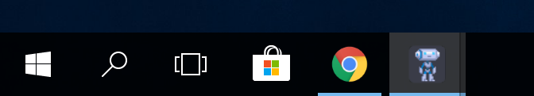
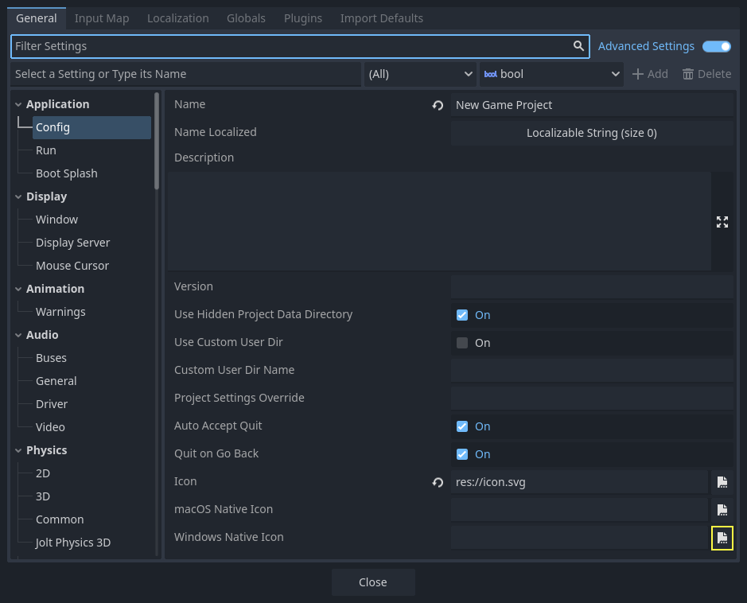
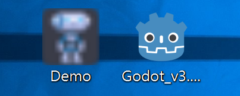
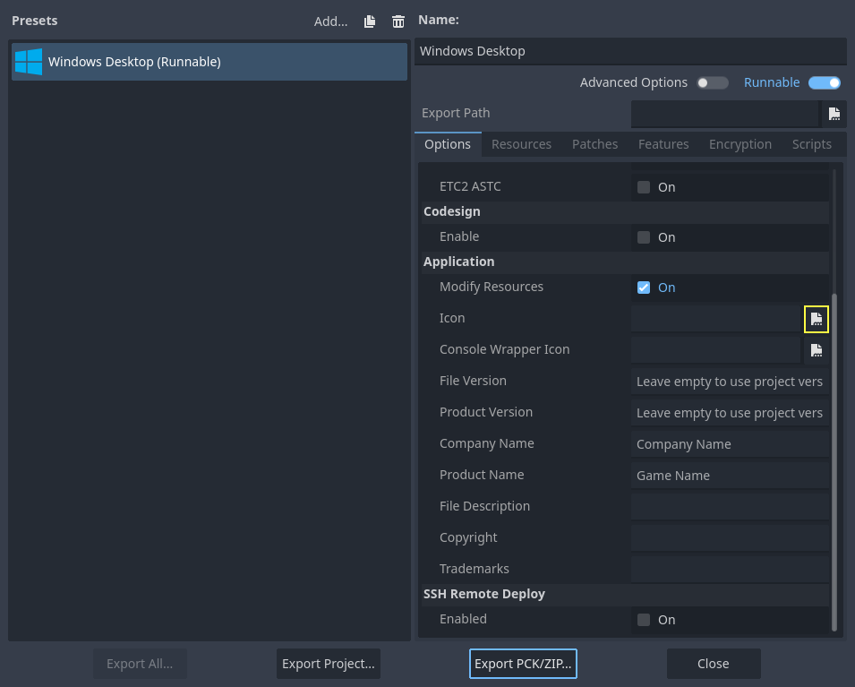
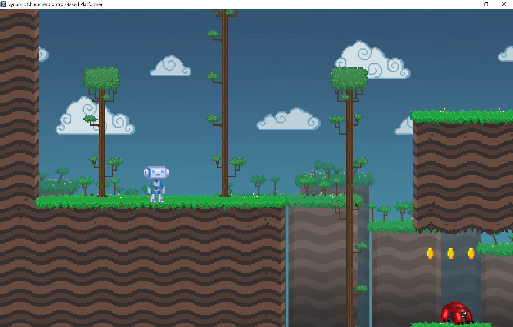

Manually changing application icon for Windows
Windows applications use a Windows only format called ICO for their file icon and taskbar icon. Since Godot 4.1, Godot can create an ICO file for you based on the icon file defined in the Windows export preset. Supported formats are PNG, WebP, and SVG. If no icon is defined in the Windows export preset, the application/config/icon project setting is used automatically instead.
This means you no longer need to follow the steps in this section to manually create an ICO file, unless you wish to have control over the icon design depending on its displayed size.
Creating a custom ICO file
You can create your application icon in any program but you will have to convert it to an ICO file using a program such as GIMP.
This video tutorial goes over how to export an ICO file with GIMP.
It is also possible to convert a PNG image to an hiDPI-friendly ICO file using this ImageMagick command:
magick icon.png -define icon:auto-resize=256,128,64,48,32,16 icon.ico
Depending on which version of ImageMagick you installed, you might need to use this command instead:
convert icon.png -define icon:auto-resize=256,128,64,48,32,16 icon.ico
Warning
For the ICO file to effectively replace the default Godot icon, it must contain all the sizes included in the default Godot icon: 16×16, 32×32, 48×48, 64×64, 128×128, 256×256. If the ICO file does not contain all the sizes, the default Godot icon will be kept for the sizes that weren't overridden.
The above ImageMagick command takes this into account.
Changing the taskbar icon
The taskbar icon is the icon that shows up on the taskbar when your project is running.

To change the taskbar icon, go to
Project > Project Settings > Application > Config, make sure
Advanced Settings are enabled to see the setting, then go to
Windows Native Icon. Click on the folder icon and select your ICO file.

This setting only changes the icon for your exported game on Windows.
To set the icon for macOS, use Macos Native Icon. And for any other platform,
use the Icon setting.
Changing the file icon
The file icon is the icon of the executable that you click on to start the project.

To do that, you will need to specify the icon when exporting. Go to Project > Export. Assuming you have already created a Windows Desktop preset, select your icon in ICO format in the Application > Icon field.

Testing the result
You can now export the project. If it worked correctly, you should see this:

Note
If your icon isn't showing up properly try clearing the icon
cache. To do so, open the Run dialog and enter ie4uinit.exe
-ClearIconCache or ie4uinit.exe -show.